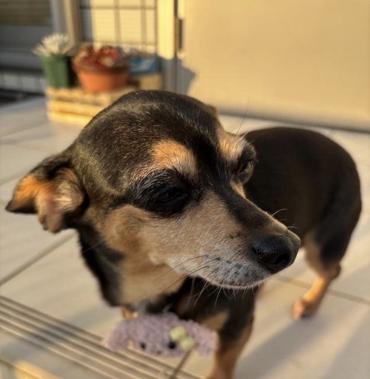

ココのプロフィール

ココは比較的のんびりしています。 家族みんなが大好きで、いつも笑顔を届けてくれます。
散歩は好きじゃなく、おやつの時間が大好きです。 人見知りで初対面の人はとても怖がります、けれど慣れたらとても甘えています。
食べることが大好きで好きな食べ物の匂いがするだけで飛んできます。
このサイトでは、ココの日常や好きなもの、 かわいい写真をたくさん紹介しています。

ココは比較的のんびりしています。 家族みんなが大好きで、いつも笑顔を届けてくれます。
散歩は好きじゃなく、おやつの時間が大好きです。 人見知りで初対面の人はとても怖がります、けれど慣れたらとても甘えています。
食べることが大好きで好きな食べ物の匂いがするだけで飛んできます。
このサイトでは、ココの日常や好きなもの、 かわいい写真をたくさん紹介しています。